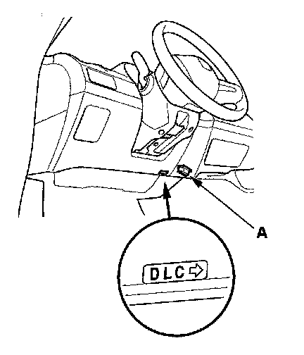
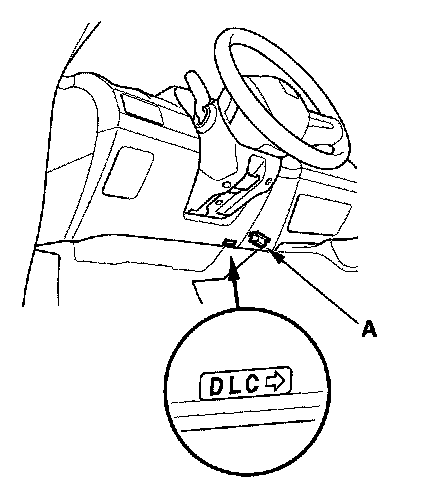

General Troubleshooting Information
General Troubleshooting InformationDTC (Diagnostic Trouble Codes)
The self-diagnostic function of the SRS system allows it to locate the causes of system problems and then store this information in memory. For easier troubleshooting, this data can be retrieved via a data link circuit.
- When you turn the ignition switch ON (II), the SRS indicator comes on. If it goes off after 6 seconds, the system is normal, and is not currently detecting any abnormality.
- If there is an abnormality, the system locates and defines the problem, stores this information in memory, and turns the SRS indicator on. The data will remain in the memory even when the ignition switch is turned off or if the battery is disconnected.
- The data is stored in memory as a diagnostic trouble code (DTC).
- The "x" at the end of each DTC denotes a numeric character (0 thru 9) or an alpha character (A thru F) that is display on the HDS.
- DTCs are either latching or resetting depending on the malfunction. With resetting DTCs, the SRS indicator will go off the next time the ignition switch is turned ON and the system is normal, but the DTC is still stored. With latching DTCs, the SRS indicator will not turn OFF until the malfunction is repaired and the DTC is cleared.
- When you connect the HDS to the 16P data link connector (DLC), you can retrieve a more detailed DTC in the Honda Systems "SRS" menu.
- After reading and recording the DTC, proceed with the troubleshooting procedure for that code.
Precautions
- Use only a digital multimeter to check the system. If it's not a Honda multimeter, make sure its output is 10 mA (0.01 A) or less when switched to the smallest value in the ohmmeter range. A tester with a higher output could damage the airbag circuit or cause accidental airbag deployment and possible injury.
- Whenever the ignition switch is ON (II), or has been turned OFF for less than 3 minutes, be careful not to bump the SRS unit; the airbags could accidentally deploy and cause damage or injuries.
- Before you remove the SRS harness, disconnect the driver's airbag connector, the front passenger's airbag connector, both side airbag connectors, both side curtain airbag connectors and both seat belt tensioner connectors.
- Make sure the battery is sufficiently charged. If the battery is dead or low, measuring values may not be correct.
- Do not touch a tester probe to the terminals in the SRS unit or harness connectors, and do not connect the terminals with a jumper wire. Use only the backprobe set and the multimeter. Backprobe spring-loaded lock type connectors correctly.
Reading the DTC
1. Make sure the ignition switch is OFF.

2. Connect the HDS to the DLC (A).
3. Turn the ignition switch ON (II).
4. Make sure the HDS communicates with the vehicle and the SRS unit. If it does not communicate, troubleshoot the DLC circuit.
5. Use the HDS to check for DTCs.
6. Read and record the DTC.
7. Turn the ignition switch OFF, and wait for 10 seconds.
8. Disconnect the HDS from the DLC.
9. Do the troubleshooting procedure for the DTC.
Erasing the DTC Memory with HDS
1. Make sure the ignition switch is OFF.

2. Connect the HDS to the DLC (A).
3. Turn the ignition switch ON (II).
4. Make sure the HDS communicates with the vehicle and the SRS unit. If it does not communicate, troubleshoot the DLC circuit.
5. In the SRS MENU of the HDS, select SRS, then DTC to erase DTC(s).
6. Turn the ignition switch OFF, and wait for 10 seconds.
7. Disconnect the HDS from the DLC.
Erasing the DTC Memory Using MES Connector without HDS
Special Tools Required
SCS Service Connector 07PAZ-0010100
To erase the DTC(s) from the SRS unit, use the HDS or the following procedure.
1. Make sure the ignition switch is OFF.

2. Connect the SCS service connector (A) to the yellow MES 2P connector (B). Do not use a jumper wire.
3. Turn the ignition switch ON (II).
4. The SRS indicator will come on for about 6 seconds, and then go off. Remove the SCS service connector from the MES connector (2P) within 4 seconds after the indicator goes off.
5. The SRS indicator will come on again. Reconnect the SCS service connector to the MES connector (2P) within 4 seconds after the indicator comes on.
6. When the SRS indicator goes off, remove the SCS service connector from the MES connector (2P) within 4 seconds.
7. The SRS indicator blinks two times, indicating that the memory has been erased.
8. Turn the ignition switch OFF, and wait for 10 seconds.
9. Turn the ignition switch ON (II) again. If the SRS indicator comes on for 6 seconds, and then goes off, the system is OK.
Troubleshooting Intermittent Failures
If there was a malfunction, but it does not recur, it will be stored in the memory as an intermittent failure, and the SRS indicator may come on depending on the malfunction detected.
NOTE: Check the condition of the battery, and the charging system. Low battery voltage may cause some intermittent failures.
After checking the DTC, troubleshoot as follows:
1. Make sure the ignition switch is OFF.
2. Connect the HDS to the DLC (A).
3. Turn the ignition switch ON (II).
4. Make sure the HDS communicates with the vehicle and the SRS unit. If it does not communicate, troubleshoot the DLC circuit.
5. In the SRS MENU of the HDS, select SRS, then DTC to erase DTC(s).
6. Read the DTC (see "Reading the DTC").
7. Erase the DTC memory (see "Erasing the DTC Memory").
8. Set the parking brake, then start the engine, and let it idle.
9. The SRS indicator comes on for about 6 seconds and then goes off.
10. Shake the related wire harnesses and the connectors, and look for loose connections, poor pinfits, and poor grounds.
11. Take a test-drive (quick acceleration, quick braking, and cornering), turn the steering wheel fully left and right, and hold it there for 5 to 10 seconds. If the problem recurs, the SRS indicator will come on.
NOTE: A faulty cable reel can cause intermittent connections related to the driver's airbag inflator DTCs.
12. If you cannot duplicate the intermittent failure, the system is OK at this time.
Checking seat weight sensors after a vehicle collision
1. Position the front passenger's seat to the rear most position, adjust the recliner to the most forward position. Do not move it from these positions.
2. Drive the vehicle, accelerate to 20 mph (36 km/h), then stop on level ground.
3. Make sure the ignition switch is OFF.
4. Connect the HDS to the DLC (A).
5. Turn the ignition switch ON (II).

6. Make sure the HDS communicates with the vehicle and the SRS unit. If it does not communicate, troubleshoot the DLC circuit.
7. From the SRS inspection menu, select Seat Weight Sensor, then Misc test, then "SEAT OUTPUT CHK" and follow the prompts until the ODS operation check has been completed.